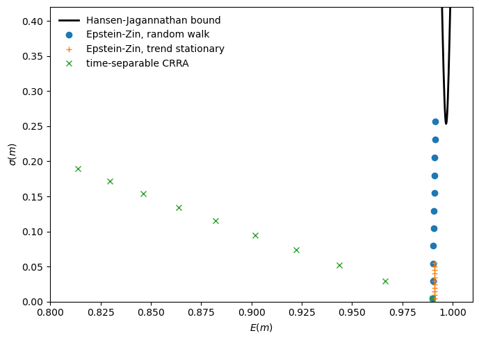
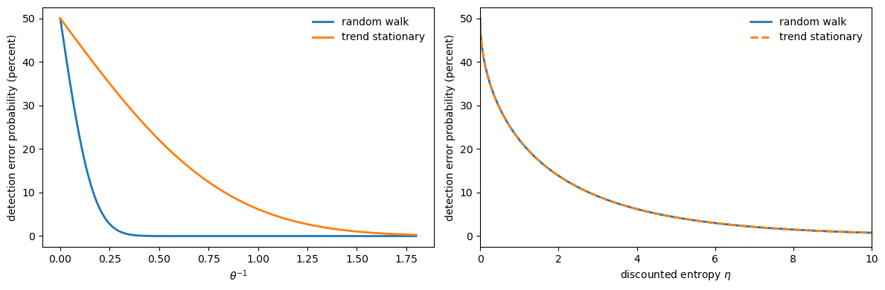
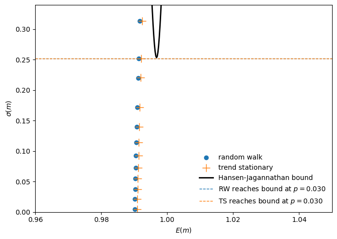
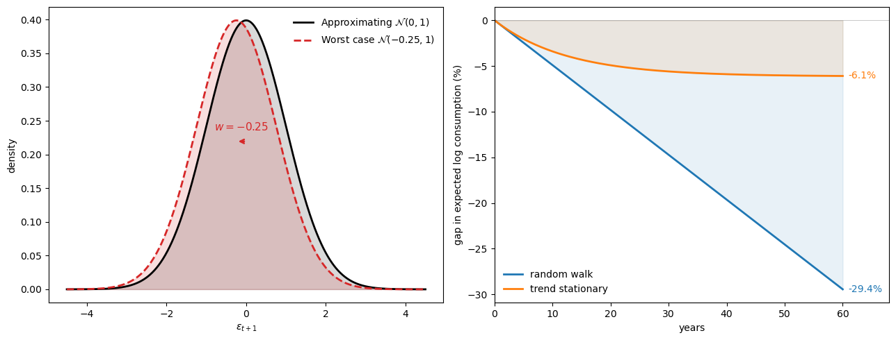
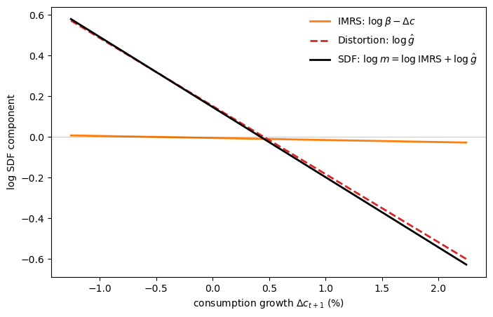
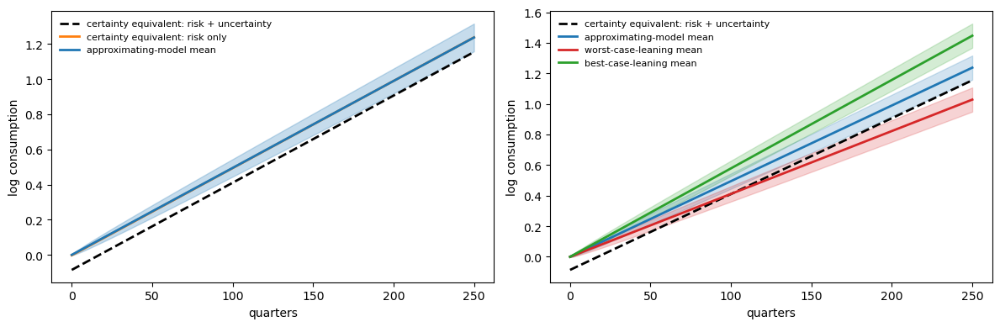
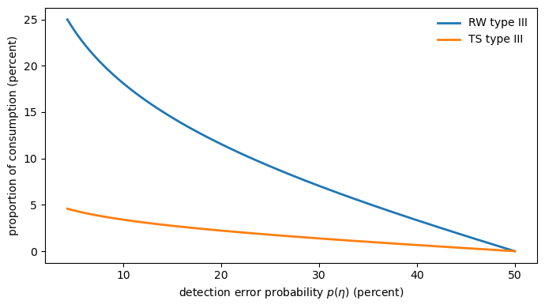
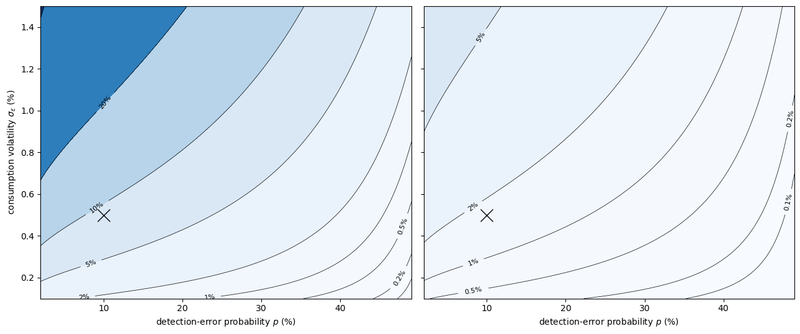
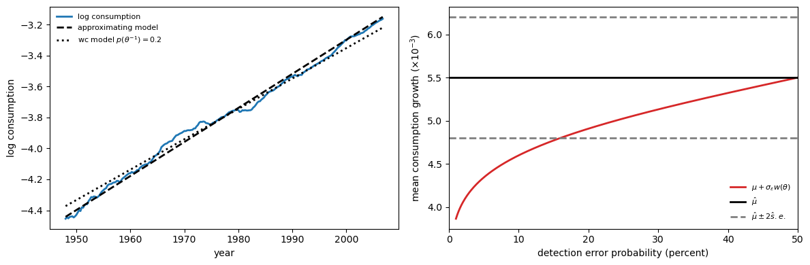

87. Doubts or Variability?#
No one has found risk aversion parameters of 50 or 100 in the diversification of individual portfolios, in the level of insurance deductibles, in the wage premiums associated with occupations with high earnings risk, or in the revenues raised by state-operated lotteries. It would be good to have the equity premium resolved, but I think we need to look beyond high estimates of risk aversion to do it. – Robert E. Lucas Jr., [Lucas, 2003]
87.1. Overview#
This lecture describes machinery that empirical macro-finance economists have used to evaluate the fits of structural statistical models that link asset prices to aggregate consumption.
The Lucas asset pricing model [Lucas, 1978] functions as a benchmark that motivates much of this work.
Note
New Keynesians call the consumption Euler equation for a one-period risk-free bond in the Lucas [Lucas, 1978] model the IS curve.
The distinguished old Keynesian disapproved of that name because the object it described was so remote from the investment function that was an important component of the IS curve of John R. Hicks [Hicks, 1937] that Tobin used.
See [Tobin, 1992].
In two classic papers, Lars Peter Hansen and Kenneth Singleton used the method of maximum likelihood [Hansen and Singleton, 1983] and a generalized method of moments [Hansen and Singleton, 1982] to investigate how well Lucas’s model fit some post WWII data.
The Hansen-Singleton papers systematically organized evidence about directions in which Lucas’s model misfit the data that macroeconomists subsequently called
an equity premium puzzle
a risk-free rate puzzle
Note
Mehra and Prescott [1985] is widely credited for naming the equity premium puzzle.
Weil [1989] is widely credited for naming the risk-free rate puzzle.
These puzzles are just ways of summarizing particular dimensions along which a particular asset pricing model – such as Lucas’s – fails empirically.
They are thus special cases of specification failures detected by statistical diagnostics constructed earlier by Hansen and Singleton [1983] and Hansen and Singleton [1982].
Macro-finance models that purport to resolve such puzzles all do so by changing features of the economic environment assumed by Lucas [Lucas, 1978].
Many important papers have proceeded by altering the preferences that Lucas had imputed to a representative agent.
Hansen-Jagannathan bounds are a key tool for evaluating how well such re-specifications do in correcting those misfits of Lucas’s 1978 model.
This lecture begins with a description of the Hansen and Jagannathan [1991] machinery.
After doing that, we proceed to describe a line of research that altered Lucas’s preference specification in ways that we can think of as being designed with the Hansen-Jagannathan bounds in mind.
We’ll organize much of this lecture around parts of the paper by Thomas Tallarini [Tallarini, 2000].
His paper is particularly enlightening for macro-finance researchers because it showed that a recursive preference specification could fit both the equity premium and the risk-free rate, thus resolving both of the puzzles mentioned above.
But like any good paper in applied economics, in answering some questions (i.e., resolving some puzzles), Tallarini’s paper naturally posed new ones.
Thus, Tallarini’s puzzles-resolving required setting the risk-aversion coefficient \(\gamma\) to around 50 for a random-walk consumption model and around 75 for a trend-stationary model, exactly the range that provoked the skepticism in the above quote from Lucas [2003].
This brings us to the next parts of this lecture.
Lucas’s skeptical response to Tallarini’s explanation of the two puzzles led Barillas et al. [2009] to ask whether those large \(\gamma\) values really measure aversion to atemporal risk, or whether they instead measure the agent’s doubts about the underlying probability model.
Their answer, and the theme of the remaining parts of this lecture, is that much of what looks like “risk aversion” can be reinterpreted as model uncertainty.
The same recursion that defines Tallarini’s risk-sensitive agent is observationally equivalent to another recursion that expresses an agent’s concern that the probability model governing consumption growth may be wrong.
Under this reading, a parameter value that indicates extreme risk aversion in one interpretation of the recursion indicates concerns about misspecification in another interpretation of the same recursion.
Barillas et al. [2009] show that modest amounts of model uncertainty can substitute for large amounts of risk aversion in terms of choices and effects on asset prices.
This reinterpretation changes the welfare question that asset prices answer.
Do large risk premia measure the benefits from reducing well-understood aggregate fluctuations, or do they measure benefits from reducing doubts about the model describing consumption growth?
To proceed, we begin by describing Hansen and Jagannathan [1991] bounds, then specify the statistical environment, lay out four related preference specifications and the connections among them, and finally revisit Tallarini’s calibration through the lens of detection-error probabilities.
Along the way, we draw on ideas and techniques from
Asset Pricing: Finite State Models, where we introduce stochastic discount factors, and
Likelihood Ratio Processes, where we develop the likelihood-ratio machinery that reappears here as the worst-case distortion \(\hat g\).
In addition to what’s in Anaconda, this lecture will need the following libraries:
!pip install pandas-datareader
We use the following imports:
import datetime as dt
import numpy as np
import pandas as pd
import matplotlib.pyplot as plt
from pandas_datareader import data as web
from scipy.stats import norm
from scipy.optimize import brentq
We also set up calibration inputs and compute the covariance matrix of equity and risk-free returns from reported moments.
β = 0.995
T = 235
# Table 2 parameters
rw = dict(μ=0.00495, σ_ε=0.0050)
ts = dict(μ=0.00418, σ_ε=0.0050, ρ=0.980, ζ=-4.48)
# Table 1 moments, converted from percent to decimals
r_e_mean, r_e_std = 0.0227, 0.0768
r_f_mean, r_f_std = 0.0032, 0.0061
r_excess_std = 0.0767
R_mean = np.array([1.0 + r_e_mean, 1.0 + r_f_mean])
cov_erf = (r_e_std**2 + r_f_std**2 - r_excess_std**2) / 2.0
Σ_R = np.array(
[
[r_e_std**2, cov_erf],
[cov_erf, r_f_std**2],
]
)
Σ_R_inv = np.linalg.inv(Σ_R)
87.2. Asset pricing 101#
87.2.1. Pricing kernel and the risk-free rate#
Let’s briefly review a few key concepts from Asset Pricing: Finite State Models.
A random variable \(m_{t+1}\) is called a stochastic discount factor if, for a one-period payoff \(y_{t+1}\) with time-\(t\) price \(p_t\), it satisfies
where \(E_t\) denotes the mathematical expectation conditioned on date-\(t\) information.
For time-separable CRRA preferences with discount factor \(\beta\) and coefficient of relative risk aversion \(\gamma\), the marginal rate of substitution gives
where \(C_t\) is consumption at time \(t\).
Setting \(y_{t+1} = 1\) (a risk-free bond) in (87.1) yields the reciprocal of the gross one-period risk-free rate:
87.2.2. Hansen–Jagannathan bounds#
Let \(R_{t+1}^e\) denote the gross return on a risky asset (e.g., the market portfolio) and \(R_{t+1}^f\) the gross return on a one-period risk-free bond.
The excess return is
An excess return is the payoff on a zero-cost portfolio that is long one dollar of the risky asset and short one dollar of the risk-free bond.
Because the portfolio costs nothing to enter, its price is \(p_t = 0\), so (87.1) implies
We can decompose the expectation of a product into a covariance plus a product of expectations:
where \(\operatorname{cov}_t\) denotes the conditional covariance and \(\sigma_t\) will denote the conditional standard deviation.
Setting the left-hand side to zero and solving for the expected excess return gives
Taking absolute values and applying the Cauchy–Schwarz inequality \(|\operatorname{cov}(X,Y)| \leq \sigma(X) \sigma(Y)\) yields
The left-hand side of (87.4) is the Sharpe ratio: the expected excess return per unit of return volatility.
The right-hand side, \(\sigma_t(m)/E_t(m)\), is the market price of risk: the maximum Sharpe ratio attainable in the market.
In words, no asset’s Sharpe ratio can exceed the market price of risk.
87.2.2.1. Unconditional version#
The bound (87.4) is stated in conditional terms.
There is an unconditional counterpart that involves a vector of \(n\) gross returns \(R_{t+1}\) (e.g., equity and risk-free) with unconditional mean \(E(R)\) and covariance matrix \(\Sigma_R\):
Exercise 1 walks through a derivation of this unconditional bound.
Here \(\mathbf{1}\) denotes an \(n \times 1\) vector of ones.
The function below computes the right-hand side of (87.5) for any given value of \(E(m)\).
def hj_std_bound(E_m):
b = np.ones(2) - E_m * R_mean
var_lb = b @ Σ_R_inv @ b
return np.sqrt(np.maximum(var_lb, 0.0))
87.2.3. Two puzzles#
Reconciling formula (87.2) with the market price of risk extracted from data on asset returns (like those in Table 1 below) requires a value of \(\gamma\) so high that it provokes skepticism.
This is the equity premium puzzle.
But high values of \(\gamma\) bring another difficulty.
High values of \(\gamma\) that deliver enough volatility \(\sigma(m)\) also push \(E(m)\), the reciprocal of the gross risk-free rate, too far down, away from the Hansen–Jagannathan bound.
This is the risk-free rate puzzle of Weil [1989].
Tallarini [2000] showed that recursive preferences with IES \(= 1\) can clear the HJ bar while avoiding the risk-free rate puzzle.
The figure below reproduces Tallarini’s key diagnostic.
Because it motivates much of what follows, we show Tallarini’s figure before developing the underlying theory.
Closed-form expressions for the Epstein–Zin SDF moments used in the plot are derived in Exercise 2.
The code below implements them alongside the corresponding CRRA moments.
def moments_type1_rw(γ):
μ, σ = rw["μ"], rw["σ_ε"]
E_m = β * np.exp(-μ + 0.5 * σ**2 * (2.0 * γ - 1.0))
var_log_m = (σ * γ) ** 2
mpr = np.sqrt(np.exp(var_log_m) - 1.0)
return E_m, mpr
def moments_type1_ts(γ):
μ, σ, ρ = ts["μ"], ts["σ_ε"], ts["ρ"]
mean_term = 1.0 - (2.0 * (1.0 - β) * (1.0 - γ)) / (1.0 - β * ρ) \
+ (1.0 - ρ) / (1.0 + ρ)
E_m = β * np.exp(-μ + 0.5 * σ**2 * mean_term)
var_term = (((1.0 - β) * (1.0 - γ)) / (1.0 - β * ρ) - 1.0) ** 2 \
+ (1.0 - ρ) / (1.0 + ρ)
var_log_m = σ**2 * var_term
mpr = np.sqrt(np.exp(var_log_m) - 1.0)
return E_m, mpr
def moments_crra_rw(γ):
μ, σ = rw["μ"], rw["σ_ε"]
var_log_m = (γ * σ) ** 2
mean_log_m = np.log(β) - γ * μ
E_m = np.exp(mean_log_m + 0.5 * var_log_m)
mpr = np.sqrt(np.exp(var_log_m) - 1.0)
return E_m, mpr
For each value of \(\gamma \in \{1, 5, 10, \ldots, 51\}\), we plot the implied \((E(m),\sigma(m))\) pair for three combinations of specifications of preferences and consumption growth processes.
These are time-separable CRRA (crosses), Epstein–Zin preferences with random-walk consumption (circles), and Epstein–Zin preferences with trend-stationary consumption (pluses).
γ_grid = np.arange(1, 55, 5)
Em_rw = np.array([moments_type1_rw(γ)[0] for γ in γ_grid])
σ_m_rw = np.array(
[moments_type1_rw(γ)[0] * moments_type1_rw(γ)[1] for γ in γ_grid])
Em_ts = np.array([moments_type1_ts(γ)[0] for γ in γ_grid])
σ_m_ts = np.array(
[moments_type1_ts(γ)[0] * moments_type1_ts(γ)[1] for γ in γ_grid])
Em_crra = np.array([moments_crra_rw(γ)[0] for γ in γ_grid])
σ_m_crra = np.array(
[moments_crra_rw(γ)[0] * moments_crra_rw(γ)[1] for γ in γ_grid])
Em_grid = np.linspace(0.8, 1.01, 1000)
HJ_std = np.array([hj_std_bound(x) for x in Em_grid])
fig, ax = plt.subplots(figsize=(7, 5))
ax.plot(Em_grid, HJ_std, lw=2, color="black",
label="Hansen-Jagannathan bound")
ax.plot(Em_rw, σ_m_rw, "o", lw=2,
label="Epstein-Zin, random walk")
ax.plot(Em_ts, σ_m_ts, "+", lw=2,
label="Epstein-Zin, trend stationary")
ax.plot(Em_crra, σ_m_crra, "x", lw=2,
label="time-separable CRRA")
ax.set_xlabel(r"$E(m)$")
ax.set_ylabel(r"$\sigma(m)$")
ax.legend(frameon=False)
ax.set_xlim(0.8, 1.01)
ax.set_ylim(0.0, 0.42)
plt.tight_layout()
plt.show()

Fig. 87.1 SDF moments and Hansen-Jagannathan bound#
The crosses tell the story of the risk-free-rate puzzle (Weil [1989]).
As \(\gamma\) rises, \(\sigma(m)/E(m)\) grows but \(E(m)\) drifts well below the range consistent with the observed risk-free rate.
The circles and pluses show Tallarini’s way out.
Recursive utility with IES \(= 1\) pushes volatility upward while keeping \(E(m)\) roughly pinned near \(1/(1+r^f)\).
For the random-walk model, the bound is reached at around \(\gamma = 50\).
For the trend-stationary model, it is reached at around \(\gamma = 75\).
The quantitative achievement is impressive, but Lucas’s challenge still stands.
Where is the microeconomic evidence for \(\gamma = 50\)?
Barillas et al. [2009] argue that these large \(\gamma\) values are not really about risk aversion.
Instead, they reflect the agent’s doubts about the probability model itself.
87.3. The choice setting#
To understand their reinterpretation, we first need to describe their statistical models of consumption growth.
87.3.1. Shocks and consumption plans#
We work with a general class of consumption plans.
Let \(x_t\) be an \(n \times 1\) state vector and \(\varepsilon_{t+1}\) an \(m \times 1\) shock.
A consumption plan belongs to the set \(\mathcal{C}(A, B, H; x_0)\) if it admits the recursive representation
where the eigenvalues of \(A\) are bounded in modulus by \(1/\sqrt{\beta}\).
The time-\(t\) consumption can therefore be written as
The equivalence theorems and Bellman equations that follow hold for arbitrary plans in \(\mathcal{C}(A,B,H;x_0)\).
We focus on the random-walk and trend-stationary models as two special cases.
87.3.2. Consumption dynamics#
Let \(c_t = \log C_t\) be log consumption.
The geometric-random-walk specification is
Iterating forward yields
The geometric-trend-stationary specification can be written as a deterministic trend plus a stationary AR(1) component:
With \(z_0 = c_0 - \zeta\), this implies the representation
Equivalently, defining the detrended series \(\tilde c_t := c_t - \mu t\),
The estimated parameters are \((\mu, \sigma_\varepsilon)\) for the random walk and \((\mu, \sigma_\varepsilon, \rho, \zeta)\) for the trend-stationary case.
We record these parameters and moments from the paper’s tables for later reference.
print("Table 2 parameters")
print(f"random walk: μ={rw['μ']:.5f}, σ_ε={rw['σ_ε']:.5f}")
print(
f"trend stationary: μ={ts['μ']:.5f}, σ_ε={ts['σ_ε']:.5f}, "
f"ρ={ts['ρ']:.3f}, ζ={ts['ζ']:.2f}"
)
print()
print("Table 1 moments")
print(f"E[r_e]={r_e_mean:.4f}, std[r_e]={r_e_std:.4f}")
print(f"E[r_f]={r_f_mean:.4f}, std[r_f]={r_f_std:.4f}")
print(f"std[r_e-r_f]={r_excess_std:.4f}")
Table 2 parameters
random walk: μ=0.00495, σ_ε=0.00500
trend stationary: μ=0.00418, σ_ε=0.00500, ρ=0.980, ζ=-4.48
Table 1 moments
E[r_e]=0.0227, std[r_e]=0.0768
E[r_f]=0.0032, std[r_f]=0.0061
std[r_e-r_f]=0.0767
87.4. Preferences, distortions, and detection#
87.4.1. Overview of agents I, II, III, and IV#
We compare four preference specifications over consumption plans \(C^\infty \in \mathcal{C}\).
Note
For origins of the names multiplier and constraint preferences, see Hansen and Sargent [2001].
The risk-sensitive preference specification used here comes from Hansen and Sargent [1995], which adjusts specifications used earlier by Jacobson [1973], Whittle [1981], and Whittle [1990] to accommodate discounting in a way that preserves time-invariant optimal decision rules.
Type I agent (Kreps–Porteus–Epstein–Zin–Tallarini) with
a discount factor \(\beta \in (0,1)\);
an intertemporal elasticity of substitution fixed at \(1\);
a risk-aversion parameter \(\gamma \geq 1\); and
an approximating conditional density \(\pi(\cdot)\) for shocks and its implied joint distribution \(\Pi_\infty(\cdot \mid x_0)\).
Type II agent (multiplier preferences) with
\(\beta \in (0,1)\);
IES \(=1\);
unit risk aversion;
an approximating model \(\Pi_\infty(\cdot \mid x_0)\); and
a penalty parameter \(\theta > 0\) that discourages probability distortions using relative entropy.
Type III agent (constraint preferences) with
\(\beta \in (0,1)\);
IES \(=1\);
unit risk aversion;
an approximating model \(\Pi_\infty(\cdot \mid x_0)\); and
a bound \(\eta\) on discounted relative entropy.
Type IV agent (pessimistic ex post Bayesian) with
\(\beta \in (0,1)\);
IES \(=1\);
unit risk aversion; and
a single pessimistic joint distribution \(\hat\Pi_\infty(\cdot \mid x_0, \theta)\) induced by the type II worst-case distortion.
Two sets of equivalence results tie these agents together.
Types I and II turn out to be observationally equivalent in a strong sense, having identical preferences over \(\mathcal{C}\).
Types III and IV are equivalent in a weaker but still useful sense, delivering the same worst-case pricing implications as a type II agent for a given endowment process.
We now formalize each agent type and describe relationships among them.
For each type, we derive a Bellman equation that pins down the agent’s value function and stochastic discount factor.
The stochastic discount factor for all four types takes the form
where \(\hat g_{t+1}\) is a likelihood-ratio distortion that we will define in each case.
Along the way, we introduce the likelihood-ratio distortion that enters the stochastic discount factor and describe detection-error probabilities that will serve as our new calibration tool.
87.4.2. Type I: Kreps–Porteus–Epstein–Zin–Tallarini preferences#
The Epstein–Zin–Weil specification combines current consumption with a certainty equivalent of future utility through a CES aggregator:
where \(\psi > 0\) is the intertemporal elasticity of substitution and the certainty equivalent uses the risk-aversion parameter \(\gamma \geq 1\):
Note
For readers interested in a general class of aggregators and certainty equivalents, see Section 7.3 of Sargent and Stachurski [2025].
Let \(\psi = 1\), so \(\rho \to 0\).
In this limit the CES aggregator reduces to
Taking logs and expanding the certainty equivalent (87.8) gives the type I recursion:
A useful change of variables is to define the transformed continuation value
and the robustness parameter
Substituting into (87.9) yields the risk-sensitive recursion (Exercise 3 asks you to verify this step)
When \(\gamma = 1\) (equivalently \(\theta = +\infty\)), the \(\log E \exp\) term reduces to \(E_t U_{t+1}\) and the recursion becomes standard discounted expected log utility, \(U_t = c_t + \beta E_t U_{t+1}\).
For consumption plans in \(\mathcal{C}(A, B, H; x_0)\), the recursion (87.12) implies the Bellman equation
87.4.2.1. Deriving the stochastic discount factor#
The stochastic discount factor is the intertemporal marginal rate of substitution, the ratio of marginal utilities at dates \(t+1\) and \(t\).
Because \(c_t\) enters (87.12) linearly, \(\partial U_t / \partial c_t = 1\).
Converting from log consumption to the consumption good gives \(\partial U_t / \partial C_t = 1/C_t\).
A perturbation to \(c_{t+1}\) in a particular state feeds into \(U_t\) through the \(\log E_t \exp\) term.
Differentiating (87.12):
Converting to consumption levels gives \(\partial U_t / \partial C_{t+1} = \beta \frac{\exp(-U_{t+1}/\theta)}{E_t[\exp(-U_{t+1}/\theta)]} \frac{1}{C_{t+1}}\).
The ratio of these marginal utilities gives the SDF:
The second factor is the likelihood-ratio distortion \(\hat g_{t+1}\): an exponential tilt that overweights states where the continuation value \(U_{t+1}\) is low.
87.4.3. Type II: multiplier preferences#
We now turn to the type II (multiplier) agent.
Before writing down the preferences, we need the machinery of martingale likelihood ratios that formalizes what it means to distort a probability model.
These tools build on Likelihood Ratio Processes, which develops properties of likelihood ratios in detail, and Divergence Measures, which covers relative entropy.
87.4.3.1. Martingale likelihood ratios#
Consider a nonnegative martingale \(G_t\) with \(E(G_t \mid x_0) = 1\).
Its one-step increments
define distorted conditional expectations: \(\tilde E_t[b_{t+1}] = E_t[g_{t+1}b_{t+1}]\).
The conditional relative entropy of the distortion is \(E_t[g_{t+1}\log g_{t+1}]\), and the discounted entropy over the entire path is \(\beta E\bigl[\sum_{t=0}^{\infty} \beta^t G_tE_t(g_{t+1}\log g_{t+1})\big|x_0\bigr]\).
A type II agent’s multiplier preference ordering over consumption plans \(C^\infty \in \mathcal{C}(A,B,H;x_0)\) is defined by
where \(G_{t+1} = g_{t+1}G_t\), \(E_t[g_{t+1}] = 1\), \(g_{t+1} \geq 0\), and \(G_0 = 1\).
A larger \(\theta\) makes probability distortions more expensive, discouraging departures from the approximating model.
The value function satisfies the Bellman equation
subject to \(\int g(\varepsilon) \pi(\varepsilon) d\varepsilon = 1\).
Inside the integral, \(g(\varepsilon) W(Ax + B\varepsilon)\) is the continuation value under the distorted model \(g\pi\), while \(\theta g(\varepsilon)\log g(\varepsilon)\) is the entropy penalty that makes large departures from the approximating model \(\pi\) costly.
The minimizer is (Exercise 4 derives this and verifies the equivalence \(W \equiv U\))
Notice that \(g(\varepsilon)\) multiplies both the continuation value \(W\) and the entropy penalty.
This is the key structural feature that makes \(\hat g\) a likelihood ratio.
Substituting (87.17) back into (87.16) gives
which is identical to (87.13).
Therefore \(W(x) \equiv U(x)\), establishing that types I and II are observationally equivalent over elements of \(\mathcal{C}(A,B,H;x_0)\).
The mapping between parameters is
def θ_from_γ(γ, β=β):
if γ <= 1:
return np.inf
return 1.0 / ((1.0 - β) * (γ - 1.0))
def γ_from_θ(θ, β=β):
if np.isinf(θ):
return 1.0
return 1.0 + 1.0 / ((1.0 - β) * θ)
87.4.4. Type III: constraint preferences#
Type III (constraint) preferences swap the entropy penalty for a hard bound.
Rather than penalizing distortions through \(\theta\), the agent minimizes expected discounted log consumption under the worst-case model subject to a cap \(\eta\) on discounted relative entropy:
subject to \(G_{t+1} = g_{t+1}G_t\), \(E_t[g_{t+1}] = 1\), \(g_{t+1} \geq 0\), \(G_0 = 1\), and
The Lagrangian for the type III problem is
where \(\theta \geq 0\) is the multiplier on the entropy constraint.
Collecting terms inside the expectation gives
which, apart from the constant \(-\theta\eta\), has the same structure as the type II objective (87.15).
The first-order condition for \(g_{t+1}\) is therefore identical, and the optimal distortion is the same \(\hat g_{t+1}\) as in (87.17), evaluated at the \(\theta\) that makes the entropy constraint bind.
The SDF is again \(m_{t+1} = \beta(C_t/C_{t+1})\hat g_{t+1}\).
So for the particular endowment process and the \(\theta\) that enforces the entropy bound, a type III agent and a type II agent assign the same shadow prices to uncertain claims.
87.4.5. Type IV: ex post Bayesian#
The type IV agent is the simplest of the four: an ordinary expected-utility agent with log preferences who happens to hold a pessimistic probability model \(\hat\Pi_\infty\):
\(\hat E_0\) denotes expectation under the pessimistic model \(\hat\Pi_\infty\).
Here \(\hat\Pi_\infty(\cdot \mid x_0, \theta)\) is the joint distribution generated by the type II agent’s worst-case distortion.
Since the agent has log utility under \(\hat\Pi_\infty\), the Euler equation for any gross return \(R_{t+1}\) is
To express this in terms of the approximating model \(\Pi_\infty\), apply a change of measure using the one-step likelihood ratio \(\hat g_{t+1} = d\hat\Pi / d\Pi\):
so the effective SDF under the approximating model is \(m_{t+1} = \beta(C_t/C_{t+1})\hat g_{t+1}\).
For the particular \(A, B, H\) and \(\theta\) used to construct \(\hat\Pi_\infty\), the type IV value function equals \(J(x)\) from type III.
87.4.6. Stochastic discount factor#
Pulling together the results for all four agent types, the stochastic discount factor can be written compactly as
The factor \(\hat g_{t+1}\) is a likelihood ratio between the approximating and worst-case one-step models.
With log utility, \(C_t/C_{t+1} = \exp(-(c_{t+1}-c_t))\) is the usual intertemporal marginal rate of substitution.
Robustness multiplies it by \(\hat g_{t+1}\), so uncertainty aversion enters pricing entirely through the distortion.
For the constraint-preference agent, the worst-case distortion coincides with the multiplier agent’s at the \(\theta\) that makes the entropy constraint bind.
For the ex post Bayesian, it is simply a change of measure from the approximating model to the pessimistic one.
87.4.7. Value function decomposition#
Substituting the minimizing \(\hat g\) back into the Bellman equation (87.16) yields a revealing decomposition of the type II value function:
Define two components:
Then \(W(x) = J(x) + \theta N(x)\).
Here \(J(x_t) = \hat E_t \sum_{j=0}^{\infty} \beta^j c_{t+j}\) is expected discounted log consumption under the worst-case model.
\(J\) is the value function shared by both the type III and type IV agents.
For the type III agent, once the worst-case model is pinned down by the entropy constraint, the resulting value is simply expected discounted consumption under that model.
The type IV agent adopts the same model as a fixed belief, so she evaluates the same expectation.
The term \(N(x)\) is discounted continuation entropy, measuring the total information cost of the probability distortion from date \(t\) onward.
This decomposition plays a central role in the welfare calculations of the welfare section below, where it explains why type III uncertainty compensation is twice that of type II.
87.4.8. Gaussian mean-shift distortions#
Everything so far holds for general distortions \(\hat g\).
We now specialize to the Gaussian case that underlies our two consumption models.
Under both models, the shock is \(\varepsilon_{t+1} \sim \mathcal{N}(0,1)\).
As we verify in the next subsection, the value function \(W\) is linear in the state, so the exponent in the worst-case distortion (87.17) is linear in \(\varepsilon_{t+1}\).
Exponentially tilting a Gaussian by a linear function produces another Gaussian with the same variance but a shifted mean.
The worst-case model therefore keeps the variance at one but shifts the mean of \(\varepsilon_{t+1}\) to some \(w < 0\).
The resulting likelihood ratio is (Exercise 5 verifies its properties)
Hence \(\log \hat g_{t+1}\) is normal with mean \(-w^2/2\) and variance \(w^2\), and
The mean shift \(w\) is determined by how strongly each shock \(\varepsilon_{t+1}\) affects continuation value.
From (87.17), the worst-case distortion puts \(\hat g \propto \exp(-W(x_{t+1})/\theta)\).
If \(W(x_{t+1})\) loads on \(\varepsilon_{t+1}\) with coefficient \(\lambda\), then the Gaussian mean shift is \(w = -\lambda/\theta\).
By guessing linear value functions and matching coefficients in the Bellman equation (Exercise 6 works out both cases), we obtain the worst-case mean shifts
The denominator \((1-\beta)\) in the random-walk case becomes \((1-\beta\rho)\) in the trend-stationary case.
Because the AR(1) component is persistent, each shock has a larger cumulative effect on continuation utility, so the worst-case distortion is more aggressive.
def w_from_θ(θ, model):
if np.isinf(θ):
return 0.0
if model == "rw":
return -rw["σ_ε"] / ((1.0 - β) * θ)
if model == "ts":
return -ts["σ_ε"] / ((1.0 - β * ts["ρ"]) * θ)
raise ValueError("model must be 'rw' or 'ts'")
87.4.9. Discounted entropy#
When the approximating and worst-case conditional densities are \(\mathcal{N}(0,1)\) and \(\mathcal{N}(w(\theta),1)\), the likelihood ratio is \(\hat g(\varepsilon) = \exp(w(\theta)\varepsilon - \frac{1}{2}w(\theta)^2)\), so \(\log \hat g(\varepsilon) = w(\theta)\varepsilon - \frac{1}{2}w(\theta)^2\).
Under the worst-case measure \(\varepsilon \sim \mathcal{N}(w(\theta),1)\), so \(E_{\hat\pi}[\varepsilon] = w(\theta)\), giving conditional relative entropy
Because the distortion is iid, the conditional entropy \(E_t[\hat g_{t+1}\log \hat g_{t+1}] = \frac{1}{2}w(\theta)^2\) from (87.24) is constant and \(N(x)\) does not depend on \(x\).
The recursion (87.21) then reduces to \(N(x) = \beta(\frac{1}{2}w(\theta)^2 + N(x))\), where we have used \(\int \hat g(\varepsilon)\pi(\varepsilon)d\varepsilon = 1\) (since \(\hat g\) is a likelihood ratio).
Solving for \(N(x)\),
gives discounted entropy
def η_from_θ(θ, model):
w = w_from_θ(θ, model)
return β * w**2 / (2.0 * (1.0 - β))
This gives a clean mapping between \(\theta\) and \(\eta\) that aligns multiplier and constraint preferences along an exogenous endowment process.
As we will see in the detection-error section below, it is more natural to hold \(\eta\) (or equivalently the detection-error probability \(p\)) fixed rather than \(\theta\) when comparing across consumption models.
87.4.10. Value functions for random-walk consumption#
We now solve the recursions (87.19), (87.20), and (87.21) in closed form for the random-walk model, where \(W\) is the type II (multiplier) value function, \(J\) is the type III/IV value function, and \(N\) is discounted continuation entropy.
Substituting \(w_{rw}(\theta) = -\sigma_\varepsilon / [(1-\beta)\theta]\) from (87.23) into (87.25) gives
so that
For \(W\), we guess \(W(x_t) = \frac{1}{1-\beta}[c_t + d]\) for some constant \(d\) and verify it in the risk-sensitive Bellman equation (87.13).
Under the random walk, \(W(x_{t+1}) = \frac{1}{1-\beta}[c_t + \mu + \sigma_\varepsilon\varepsilon_{t+1} + d]\), so \(-W(x_{t+1})/\theta\) is affine in the standard normal \(\varepsilon_{t+1}\).
Using the fact that \(\log E[e^Z] = \mu_Z + \frac{1}{2}\sigma_Z^2\) for a normal random variable \(Z\), the Bellman equation (87.13) reduces to a constant-matching condition that pins down \(d\) (Exercise 7 works through the algebra):
Using \(W = J + \theta N\), the type III/IV value function is
Notice that the coefficient on \(\sigma_\varepsilon^2/[(1-\beta)\theta]\) doubles from \(\tfrac{1}{2}\) in \(W\) to \(1\) in \(J\).
The reason is that \(W\) includes the entropy “rebate” \(\theta N\), which partially offsets the pessimistic tilt, while \(J\) evaluates consumption purely under the worst-case model with no such offset.
87.5. Detection-error probabilities#
So far we have expressed SDF moments, value functions, and worst-case distortions as functions of \(\gamma\) (or equivalently \(\theta\)).
But if \(\gamma\) should not be calibrated by introspection about atemporal gambles, what replaces it?
The answer proposed by Barillas et al. [2009] is a statistical test: how easily could an econometrician distinguish the approximating model from its worst-case alternative?
87.5.1. Likelihood-ratio testing and detection errors#
Let \(L_T\) be the log likelihood ratio between the worst-case and approximating models based on a sample of length \(T\).
Define
where \(\Pr_A\) and \(\Pr_B\) denote probabilities under the approximating and worst-case models.
Then \(p(\theta^{-1}) = \frac{1}{2}(p_A + p_B)\) is the average probability of choosing the wrong model.
Fix a sample size \(T\) (here 235 quarters, matching the postwar US data used in the paper).
For a given \(\theta\), compute the worst-case model and imagine that a Bayesian runs a likelihood-ratio test to distinguish it from the approximating model.
What fraction of the time would she pick the wrong one?
That fraction is the detection-error probability \(p(\theta^{-1})\).
When \(p\) is close to 0.5 the two models are nearly indistinguishable, so the consumer’s fear is hard to rule out.
When \(p\) is small the worst-case model is easy to reject and the robustness concern carries less force.
87.5.2. Market price of model uncertainty#
The market price of model uncertainty (MPU) is the conditional standard deviation of the distortion:
In the Gaussian mean-shift setting, \(L_T\) is normal with mean \(\pm \tfrac{1}{2}w^2T\) and variance \(w^2T\), so the detection-error probability has the closed form (Exercise 8 derives this)
def detection_probability(θ, model):
w = abs(w_from_θ(θ, model))
return norm.cdf(-0.5 * w * np.sqrt(T))
def θ_from_detection_probability(p, model):
if p >= 0.5:
return np.inf
w_abs = -2.0 * norm.ppf(p) / np.sqrt(T)
if model == "rw":
return rw["σ_ε"] / ((1.0 - β) * w_abs)
if model == "ts":
return ts["σ_ε"] / ((1.0 - β * ts["ρ"]) * w_abs)
raise ValueError("model must be 'rw' or 'ts'")
87.5.3. Interpreting the calibration objects#
Let us trace the chain of mappings that connects preference parameters to statistical distinguishability.
The parameter \(\theta\) governs how expensive it is for the minimizing player to distort the approximating model.
A small \(\theta\) means cheap distortions and therefore stronger robustness concerns.
The associated \(\gamma = 1 + \left[(1-\beta)\theta\right]^{-1}\) can be large even when we do not want to interpret behavior as extreme atemporal risk aversion.
The distortion magnitude \(|w(\theta)|\) directly measures how pessimistically the agent tilts one-step probabilities.
The detection-error probability \(p(\theta^{-1})\) translates that tilt into a statistical statement about finite-sample distinguishability.
High \(p\) means the two models are hard to tell apart, while low \(p\) means the worst case is easier to reject.
This chain bridges econometric identification and preference calibration.
Finally, recall from (87.25) that discounted entropy is \(\eta = \frac{\beta}{2(1-\beta)}w(\theta)^2\), so when the distortion is a Gaussian mean shift, discounted entropy is proportional to the squared market price of model uncertainty.
87.5.4. Detection probabilities across the two models#
The left panel below plots \(p(\theta^{-1})\) against \(\theta^{-1}\) for both consumption specifications.
Because the baseline dynamics differ, the same numerical \(\theta\) implies very different detection probabilities across the two models.
The right panel resolves this by plotting detection probabilities against discounted relative entropy \(\eta\), which normalizes the statistical distance.
Once indexed by \(\eta\), the two curves fall on top of each other.
θ_inv_grid = np.linspace(0.0, 1.8, 400)
θ_grid = np.full_like(θ_inv_grid, np.inf)
mask_θ = θ_inv_grid > 0.0
θ_grid[mask_θ] = 1.0 / θ_inv_grid[mask_θ]
p_rw = np.array([detection_probability(θ, "rw") for θ in θ_grid])
p_ts = np.array([detection_probability(θ, "ts") for θ in θ_grid])
η_rw = np.array([η_from_θ(θ, "rw") for θ in θ_grid])
η_ts = np.array([η_from_θ(θ, "ts") for θ in θ_grid])
fig, axes = plt.subplots(1, 2, figsize=(12, 4))
axes[0].plot(θ_inv_grid, 100.0 * p_rw, lw=2, label="random walk")
axes[0].plot(θ_inv_grid, 100.0 * p_ts, lw=2, label="trend stationary")
axes[0].set_xlabel(r"$\theta^{-1}$")
axes[0].set_ylabel("detection error probability (percent)")
axes[0].legend(frameon=False)
axes[1].plot(η_rw, 100.0 * p_rw, lw=2, label="random walk")
axes[1].plot(η_ts, 100.0 * p_ts, lw=2, ls="--", label="trend stationary")
axes[1].set_xlabel(r"discounted entropy $\eta$")
axes[1].set_ylabel("detection error probability (percent)")
axes[1].set_xlim(0.0, 10)
axes[1].legend(frameon=False)
plt.tight_layout()
plt.show()

Fig. 87.2 Detection probabilities across two models#
Detection-error probabilities (or equivalently, discounted entropy) are therefore the right yardstick for cross-model comparisons.
If we hold \(\theta\) fixed when switching from a random walk to a trend-stationary specification, we implicitly change how much misspecification the consumer fears.
Holding \(\eta\) or \(p\) fixed instead keeps the statistical difficulty of detecting misspecification constant.
The explicit mapping that equates discounted entropy across models is (Exercise 9 derives it):
At our calibration \(\sigma_\varepsilon^{\text{TS}} = \sigma_\varepsilon^{\text{RW}}\), this simplifies to \(\theta_{\text{TS}} = \frac{1-\beta}{1-\rho\beta}\theta_{\text{RW}}\).
Because \(\rho = 0.98\) and \(\beta = 0.995\), the ratio \((1-\beta)/(1-\rho\beta)\) is much less than one, so holding entropy fixed requires a substantially smaller \(\theta\) (stronger robustness) for the trend-stationary model than for the random walk.
87.6. Unify the two models using detection-error probabilities#
With this machinery in hand, we can redraw Tallarini’s figure using detection-error probabilities as the common index.
For each \(p(\theta^{-1}) = 0.50, 0.45, \ldots, 0.01\), we invert to find the model-specific \(\theta\), convert to \(\gamma\), and plot the implied \((E(m), \sigma(m))\) pair.
p_points = np.array(
[0.50, 0.45, 0.40, 0.35, 0.30, 0.25, 0.20, 0.15, 0.10, 0.05, 0.01])
θ_rw_points = np.array(
[θ_from_detection_probability(p, "rw") for p in p_points])
θ_ts_points = np.array(
[θ_from_detection_probability(p, "ts") for p in p_points])
γ_rw_points = np.array([γ_from_θ(θ) for θ in θ_rw_points])
γ_ts_points = np.array([γ_from_θ(θ) for θ in θ_ts_points])
Em_rw_p = np.array(
[moments_type1_rw(γ)[0] for γ in γ_rw_points])
σ_m_rw_p = np.array(
[moments_type1_rw(γ)[0] * moments_type1_rw(γ)[1] for γ in γ_rw_points])
Em_ts_p = np.array(
[moments_type1_ts(γ)[0] for γ in γ_ts_points])
σ_m_ts_p = np.array(
[moments_type1_ts(γ)[0] * moments_type1_ts(γ)[1] for γ in γ_ts_points])
print("p γ_rw γ_ts")
for p, g1, g2 in zip(p_points, γ_rw_points, γ_ts_points):
print(f"{p:>4.2f} {g1:>9.2f} {g2:>9.2f}")
p γ_rw γ_ts
0.50 1.00 1.00
0.45 4.28 17.33
0.40 7.61 33.92
0.35 11.05 51.07
0.30 14.68 69.14
0.25 18.60 88.65
0.20 22.96 110.36
0.15 28.04 135.68
0.10 34.44 167.53
0.05 43.92 214.74
0.01 61.70 303.29
# Empirical Sharpe ratio — the minimum of the HJ bound curve
sharpe = (r_e_mean - r_f_mean) / r_excess_std
def sharpe_gap(p, model):
"""Market price of risk minus Sharpe ratio, as a function of p."""
if p >= 0.5:
return -sharpe
θ = θ_from_detection_probability(p, model)
γ = γ_from_θ(θ)
_, mpr = moments_type1_rw(γ) if model == "rw" else moments_type1_ts(γ)
return mpr - sharpe
p_hj_rw = brentq(sharpe_gap, 1e-4, 0.49, args=("rw",))
p_hj_ts = brentq(sharpe_gap, 1e-4, 0.49, args=("ts",))
fig, ax = plt.subplots(figsize=(7, 5))
ax.plot(Em_rw_p, σ_m_rw_p, "o", lw=2,
label="random walk")
ax.plot(Em_ts_p, σ_m_ts_p, "+", lw=2, markersize=12,
label="trend stationary")
ax.plot(Em_grid, HJ_std, lw=2,
color="black", label="Hansen-Jagannathan bound")
# Mark p where each model's market price of risk reaches the Sharpe ratio
for p_hj, model, color, name, marker in [
(p_hj_rw, "rw", "C0", "RW", "o"),
(p_hj_ts, "ts", "C1", "TS", "+"),
]:
θ_hj = θ_from_detection_probability(p_hj, model)
γ_hj = γ_from_θ(θ_hj)
Em_hj, mpr_hj = (moments_type1_rw(γ_hj) if model == "rw"
else moments_type1_ts(γ_hj))
σ_m_hj = Em_hj * mpr_hj
ax.axhline(σ_m_hj, ls="--", lw=1, color=color,
label=f"{name} reaches bound at $p = {p_hj:.3f}$")
if model == "ts":
ax.plot(Em_hj, σ_m_hj, marker, lw=2, markersize=12, color=color)
else:
ax.plot(Em_hj, σ_m_hj, marker, lw=2, color=color)
ax.set_xlabel(r"$E(m)$")
ax.set_ylabel(r"$\sigma(m)$")
ax.legend(frameon=False)
ax.set_xlim(0.96, 1.05)
ax.set_ylim(0.0, 0.34)
plt.tight_layout()
plt.show()

Fig. 87.3 Pricing loci from common detectability#
The result is striking.
The random-walk and trend-stationary loci nearly coincide.
Recall that under Tallarini’s \(\gamma\)-calibration, reaching the Hansen–Jagannathan bound required \(\gamma \approx 50\) for the random walk but \(\gamma \approx 75\) for the trend-stationary model.
These are very different numbers for what is supposed to be the “same” preference parameter.
Under detection-error calibration, both models reach the bound at essentially the same detectability level.
The apparent model dependence was an artifact of using \(\gamma\) as the cross-model yardstick.
Once we measure robustness concerns in units of statistical detectability, the two consumption specifications tell a single, coherent story.
A representative consumer with moderate, difficult-to-dismiss fears about model misspecification behaves as though she has very high risk aversion.
The following figure brings together the two key ideas of this section: a small one-step density shift that is hard to detect (left panel) compounds into a large gap in expected log consumption (right panel).
At \(p = 0.03\) both models share the same innovation mean shift \(w\), and the left panel shows that the approximating and worst-case one-step densities nearly coincide.
The right panel reveals the cumulative consequence: a per-period shift that is virtually undetectable compounds into a large gap in expected log consumption, especially under random-walk dynamics where each shock has a permanent effect.
p_star = 0.03
θ_star = θ_from_detection_probability(p_star, "rw")
w_star = w_from_θ(θ_star, "rw")
σ_ε = rw["σ_ε"]
ρ = ts["ρ"]
fig, (ax1, ax2) = plt.subplots(1, 2, figsize=(13, 5))
ε = np.linspace(-4.5, 4.5, 500)
f0 = norm.pdf(ε, 0, 1)
fw = norm.pdf(ε, w_star, 1)
ax1.fill_between(ε, f0, alpha=0.15, color='k')
ax1.plot(ε, f0, 'k', lw=2,
label=r'Approximating $\mathcal{N}(0, 1)$')
ax1.fill_between(ε, fw, alpha=0.15, color='C3')
ax1.plot(ε, fw, 'C3', lw=2, ls='--',
label=fr'Worst case $\mathcal{{N}}({w_star:.2f},1)$')
peak = norm.pdf(0, 0, 1)
ax1.annotate('', xy=(w_star, 0.55 * peak), xytext=(0, 0.55 * peak),
arrowprops=dict(arrowstyle='->', color='C3', lw=1.8))
ax1.text(w_star / 2, 0.59 * peak, f'$w = {w_star:.2f}$',
ha='center', fontsize=11, color='C3')
ax1.set_xlabel(r'$\varepsilon_{t+1}$')
ax1.set_ylabel('density')
ax1.legend(frameon=False)
quarters = np.arange(0, 241)
years = quarters / 4
gap_rw = 100 * σ_ε * w_star * quarters
gap_ts = 100 * σ_ε * w_star * (1 - ρ**quarters) / (1 - ρ)
ax2.plot(years, gap_rw, 'C0', lw=2, label='random walk')
ax2.plot(years, gap_ts, 'C1', lw=2, label='trend stationary')
ax2.fill_between(years, gap_rw, alpha=0.1, color='C0')
ax2.fill_between(years, gap_ts, alpha=0.1, color='C1')
ax2.axhline(0, color='k', lw=0.5, alpha=0.3)
# Endpoint labels
ax2.text(61, gap_rw[-1], f'{gap_rw[-1]:.1f}%',
fontsize=10, color='C0', va='center')
ax2.text(61, gap_ts[-1], f'{gap_ts[-1]:.1f}%',
fontsize=10, color='C1', va='center')
ax2.set_xlabel('years')
ax2.set_ylabel('gap in expected log consumption (%)')
ax2.legend(frameon=False, loc='lower left')
ax2.set_xlim(0, 68)
plt.tight_layout()
plt.show()

Fig. 87.4 Density shift and cumulative consumption#
The next figure poses the “doubts or variability?” question by decomposing the log SDF into two additive components.
Taking logs of (87.18) gives
Under the random-walk model, \(\Delta c_{t+1} = \mu + \sigma_\varepsilon \varepsilon_{t+1}\), and the Gaussian distortion (87.22) gives \(\log \hat g_{t+1} = w \varepsilon_{t+1} - \tfrac{1}{2}w^2\).
Substituting, we can write
so the slope of \(\log m_{t+1}\) in \(\varepsilon_{t+1}\) is \(\sigma_\varepsilon - w\).
Since \(w < 0\), the distortion steepens the SDF relative to what log utility alone would deliver.
The figure below reveals how little work log utility does on its own.
The intertemporal marginal rate of substitution (IMRS) is nearly flat.
At postwar calibrated volatility (\(\sigma_\varepsilon = 0.005\)), it contributes almost nothing to the pricing kernel’s slope.
The worst-case distortion accounts for virtually all of the SDF’s volatility.
What looks like extreme risk aversion (\(\gamma \approx 34\)) is really just log utility combined with moderate fears of model misspecification.
θ_cal = θ_from_detection_probability(0.10, "rw")
γ_cal = γ_from_θ(θ_cal)
w_cal = w_from_θ(θ_cal, "rw")
μ_c, σ_c = rw["μ"], rw["σ_ε"]
Δc = np.linspace(μ_c - 3.5 * σ_c, μ_c + 3.5 * σ_c, 300)
ε = (Δc - μ_c) / σ_c
log_imrs = np.log(β) - Δc
log_ghat = w_cal * ε - 0.5 * w_cal**2
log_sdf = log_imrs + log_ghat
fig, ax = plt.subplots(figsize=(8, 5))
ax.plot(100 * Δc, log_imrs, 'C1', lw=2,
label=r'IMRS: $\log\beta - \Delta c$')
ax.plot(100 * Δc, log_ghat, 'C3', lw=2, ls='--',
label=r'Distortion: $\log\hat{g}$')
ax.plot(100 * Δc, log_sdf, 'k', lw=2,
label=r'SDF: $\log m = \log\mathrm{IMRS} + \log\hat{g}$')
ax.axhline(0, color='k', lw=0.5, alpha=0.3)
ax.set_xlabel(r'consumption growth $\Delta c_{t+1}$ (%)')
ax.set_ylabel('log SDF component')
ax.legend(frameon=False, fontsize=10, loc='upper right')
plt.show()

Fig. 87.5 Robust SDF log-utility decomposition#
87.7. What do risk premia measure?#
Lucas [2003] asked how much consumption a representative consumer would sacrifice to eliminate aggregate fluctuations.
His answer rested on the assumption that the consumer knows the true data-generating process.
The robust reinterpretation opens up a second, quite different thought experiment.
Instead of eliminating all randomness, suppose we keep the randomness but remove the consumer’s fear of model misspecification (set \(\theta = \infty\)).
How much would she pay for that relief?
To answer this, we seek a permanent proportional reduction \(c_0 - c_0^k\) in initial log consumption that leaves an agent of type \(k\) indifferent between the original risky plan and a deterministic certainty-equivalent path.
Because utility is log and the consumption process is Gaussian, these compensations can be computed in closed form.
87.7.1. The certainty equivalent path#
The point of comparison is the deterministic path with the same mean level of consumption as the stochastic plan:
The additional \(\tfrac{1}{2}\sigma_\varepsilon^2\) term is a Jensen’s inequality correction.
Since \(E[C_t] = E[e^{c_t}] = \exp(c_0 + t\mu + \tfrac{1}{2}t\sigma_\varepsilon^2)\), (87.33) matches the mean level of consumption at every date.
87.7.2. Compensating variations from the value functions#
We use the closed-form value functions derived earlier: (87.27) for the type I/II value function \(W\) and (87.28) for the type III/IV value function \(J\).
For the certainty-equivalent path (87.33), there is no risk and no model uncertainty (\(\theta = \infty\), so \(\hat g = 1\)), so the value function reduces to discounted expected log utility.
With \(c_t^{ce} = c_0^J + t(\mu + \tfrac{1}{2}\sigma_\varepsilon^2)\), we have
where we used \(\sum_{t \geq 0}\beta^t = \frac{1}{1-\beta}\) and \(\sum_{t \geq 0}t\beta^t = \frac{\beta}{(1-\beta)^2}\).
Factoring gives
87.7.3. Type I (Epstein–Zin) compensation#
Setting \(U^{ce}(c_0^I) = W(x_0)\) from (87.27):
Multiplying both sides by \((1-\beta)\) and cancelling the common \(\frac{\beta\mu}{1-\beta}\) terms gives
Solving for \(c_0 - c_0^I\):
where the last step uses \(\gamma = 1 + [(1-\beta)\theta]^{-1}\).
87.7.4. Type II (multiplier) decomposition#
Because \(W \equiv U\), we have \(c_0^{II} = c_0^I\) and the total compensation is the same.
However, the interpretation differs because we can now decompose it into risk and model uncertainty components.
A type II agent with \(\theta = \infty\) (no model uncertainty) has log preferences and requires
The risk term \(\Delta c_0^{risk}\) is Lucas’s cost of business cycles.
At postwar consumption volatility (\(\sigma_\varepsilon \approx 0.005\)), it is negligibly small.
The uncertainty term \(\Delta c_0^{uncertainty}\) captures the additional compensation a type II agent demands for facing model misspecification.
With \(\theta\) in the denominator, this term can be first-order even when the detection-error probability is only moderate.
87.7.5. Type III (constraint) compensation#
For a type III agent, we set \(U^{ce}(c_0^{III}) = J(x_0)\) using the value function \(J\) from (87.28):
Following the same algebra as for type I but with the doubled uncertainty correction in \(J\):
Using \(\frac{1}{(1-\beta)\theta} = \gamma - 1\), this simplifies to
The risk component is the same \(\frac{\beta\sigma_\varepsilon^2}{2(1-\beta)}\) as before.
The uncertainty component alone is
which is twice the type II uncertainty compensation (87.35).
The factor of two traces back to the difference between \(W\) and \(J\) noted after (87.28).
The entropy rebate \(\theta N\) in \(W = J + \theta N\) partially offsets the pessimistic tilt for the type II agent, but not for the type III agent who evaluates consumption purely under the worst-case model.
87.7.6. Type IV (ex post Bayesian) compensation#
A type IV agent believes the pessimistic model, so the perceived drift is \(\tilde\mu = \mu - \sigma_\varepsilon^2/[(1-\beta)\theta]\).
The compensation for moving to the certainty-equivalent path is the same as (87.36), because this agent ranks plans using the same value function \(J\).
87.7.7. Comparison with a risky but free-of-model-uncertainty path#
The certainty equivalents above compare a risky plan to a deterministic path, thereby eliminating both risk and uncertainty at once.
We now describe an alternative measure that isolates compensation for model uncertainty alone by keeping risk intact.
The idea is to compare two situations with identical risky consumption for all dates \(t \geq 1\), concentrating all compensation for model uncertainty in a single adjustment to date-zero consumption.
Specifically, we seek \(c_0^{II}(u)\) that makes a type II agent indifferent between:
Facing the stochastic plan under \(\theta < \infty\) (fear of model misspecification), consuming \(c_0\) at date zero.
Facing the same stochastic plan under \(\theta = \infty\) (no fear of misspecification), but consuming only \(c_0^{II}(u) < c_0\) at date zero.
In both cases, continuation consumptions \(c_t\) for \(t \geq 1\) are generated by the random walk starting from the same \(c_0\).
For the type II agent under \(\theta < \infty\), the total value is \(W(c_0)\) from (87.27).
For the agent liberated from model uncertainty (\(\theta = \infty\)), the value is
where \(V^{\log}(c_t) = \frac{1}{1-\beta} \left[c_t + \frac{\beta\mu}{1-\beta}\right]\) is the log-utility value function and \(c_1 = c_0 + \mu + \sigma_\varepsilon \varepsilon_1\).
Since \(c_1\) is built from \(c_0\) (not \(c_0^{II}(u)\)), the continuation is
where we used \(E[c_1] = c_0 + \mu\) (the noise term has zero mean).
Expanding gives
Setting \(W(c_0)\) equal to the liberation value and simplifying:
Because \(\frac{c_0}{1-\beta} - \frac{\beta c_0}{1-\beta} = c_0\), solving for the compensation gives
This is \(\frac{1}{1-\beta}\) times the uncertainty compensation \(\Delta c_0^{\text{uncertainty}}\) from (87.35).
The extra factor of \(\frac{1}{1-\beta}\) arises because all compensation is packed into a single period.
Adjusting \(c_0\) alone must offset the cumulative loss in continuation value that the uncertainty penalty imposes in every future period.
An analogous calculation for a type III agent, using \(J(c_0)\) from (87.28), gives
which is \(\frac{1}{1-\beta}\) times the type III uncertainty compensation and twice the type II compensation (87.37), again reflecting the absence of the entropy rebate in \(J\).
87.7.8. Summary of welfare compensations (random walk)#
The following table collects all compensating variations for the random walk model.
Agent |
Compensation |
Formula |
Measures |
|---|---|---|---|
I, II |
\(c_0 - c_0^{II}\) |
\(\frac{\beta\sigma_\varepsilon^2\gamma}{2(1-\beta)}\) |
risk + uncertainty (vs. deterministic) |
II |
\(c_0 - c_0^{II}(r)\) |
\(\frac{\beta\sigma_\varepsilon^2}{2(1-\beta)}\) |
risk only (vs. deterministic) |
II |
\(c_0^{II}(r) - c_0^{II}\) |
\(\frac{\beta\sigma_\varepsilon^2}{2(1-\beta)^2\theta}\) |
uncertainty only (vs. deterministic) |
II |
\(c_0 - c_0^{II}(u)\) |
\(\frac{\beta\sigma_\varepsilon^2}{2(1-\beta)^3\theta}\) |
uncertainty only (vs. risky path) |
III |
\(c_0 - c_0^{III}\) |
\(\frac{\beta\sigma_\varepsilon^2(2\gamma-1)}{2(1-\beta)}\) |
risk + uncertainty (vs. deterministic) |
III |
\(c_0^{III}(r) - c_0^{III}\) |
\(\frac{\beta\sigma_\varepsilon^2}{(1-\beta)^2\theta}\) |
uncertainty only (vs. deterministic) |
III |
\(c_0 - c_0^{III}(u)\) |
\(\frac{\beta\sigma_\varepsilon^2}{(1-\beta)^3\theta}\) |
uncertainty only (vs. risky path) |
The “versus deterministic” rows use the certainty-equivalent path (87.33) as a benchmark.
The “vs. risky path” rows use the risky-but-uncertainty-free comparison of (87.37)–(87.38).
87.7.9. Trend-stationary formulas#
For the trend-stationary model, the denominators \((1-\beta)\) in the uncertainty terms are replaced by \((1-\beta\rho)\), and the risk terms involve \((1-\beta\rho^2)\):
The qualitative message carries over: the risk component is negligible, and the model-uncertainty component dominates.
87.8. Visualizing the welfare decomposition#
We set \(\beta = 0.995\) and calibrate \(\theta\) so that \(p(\theta^{-1}) = 0.10\), a conservative detection-error level.
p_star = 0.10
θ_star = θ_from_detection_probability(p_star, "rw")
γ_star = γ_from_θ(θ_star)
w_star = w_from_θ(θ_star, "rw")
# Type II compensations, random walk model
comp_risk_only = β * rw["σ_ε"]**2 / (2.0 * (1.0 - β))
comp_risk_unc = comp_risk_only + β * rw["σ_ε"]**2 / (2.0 * (1.0 - β)**2 * θ_star)
# Two useful decompositions in levels
risk_only_pct = 100.0 * (np.exp(comp_risk_only) - 1.0)
risk_unc_pct = 100.0 * (np.exp(comp_risk_unc) - 1.0)
uncertainty_only_pct = 100.0 * (np.exp(comp_risk_unc - comp_risk_only) - 1.0)
print(f"p*={p_star:.2f}, θ*={θ_star:.4f}, γ*={γ_star:.2f}, w*={w_star:.4f}")
print(f"risk only compensation (log units): {comp_risk_only:.6f}")
print(f"risk + uncertainty compensation (log units): {comp_risk_unc:.6f}")
print(f"risk only compensation (percent): {risk_only_pct:.3f}%")
print(f"risk + uncertainty compensation (percent): {risk_unc_pct:.3f}%")
print(f"uncertainty component alone (percent): {uncertainty_only_pct:.3f}%")
h = 250
t = np.arange(h + 1)
# Baseline approximating model fan
mean_base = rw["μ"] * t
std_base = rw["σ_ε"] * np.sqrt(t)
# Certainty equivalent line from Eq. (47), shifted by compensating variations
certainty_slope = rw["μ"] + 0.5 * rw["σ_ε"]**2
ce_risk = -comp_risk_only + certainty_slope * t
ce_risk_unc = -comp_risk_unc + certainty_slope * t
# Alternative models from the ambiguity set in panel B
mean_low = (rw["μ"] + rw["σ_ε"] * w_star) * t
mean_high = (rw["μ"] - rw["σ_ε"] * w_star) * t
p*=0.10, θ*=5.9809, γ*=34.44, w*=-0.1672
risk only compensation (log units): 0.002487
risk + uncertainty compensation (log units): 0.085669
risk only compensation (percent): 0.249%
risk + uncertainty compensation (percent): 8.945%
uncertainty component alone (percent): 8.674%
fig, axes = plt.subplots(1, 2, figsize=(12, 4))
# Panel A
ax = axes[0]
ax.fill_between(t, mean_base - std_base, mean_base + std_base,
alpha=0.25, color="tab:blue")
ax.plot(t, ce_risk_unc, lw=2, ls="--", color="black",
label="certainty equivalent: risk + uncertainty")
ax.plot(t, ce_risk, lw=2, color="tab:orange",
label="certainty equivalent: risk only")
ax.plot(t, mean_base, lw=2,
color="tab:blue", label="approximating-model mean")
ax.set_xlabel("quarters")
ax.set_ylabel("log consumption")
ax.legend(frameon=False, fontsize=8, loc="upper left")
# Panel B
ax = axes[1]
ax.fill_between(t, mean_base - std_base, mean_base + std_base,
alpha=0.20, color="tab:blue")
ax.fill_between(t, mean_low - std_base, mean_low + std_base,
alpha=0.20, color="tab:red")
ax.fill_between(t, mean_high - std_base, mean_high + std_base,
alpha=0.20, color="tab:green")
ax.plot(t, ce_risk_unc, lw=2, ls="--", color="black",
label="certainty equivalent: risk + uncertainty")
ax.plot(t, mean_base, lw=2, color="tab:blue", label="approximating-model mean")
ax.plot(t, mean_low, lw=2, color="tab:red", label="worst-case-leaning mean")
ax.plot(t, mean_high, lw=2, color="tab:green", label="best-case-leaning mean")
ax.set_xlabel("quarters")
ax.set_ylabel("log consumption")
ax.legend(frameon=False, fontsize=8, loc="upper left")
plt.tight_layout()
plt.show()

Fig. 87.6 Certainty equivalents under robustness#
The left panel illustrates the elimination of model uncertainty and risk for a type II agent.
The shaded fan shows a one-standard-deviation band for the \(j\)-step-ahead conditional distribution of \(c_t\) under the calibrated random-walk model.
The dashed line \(c^{II}\) shows the certainty-equivalent path whose date-zero consumption is reduced by \(c_0 - c_0^{II}\), making the type II agent indifferent between this deterministic trajectory and the stochastic plan.
It compensates for bearing both risk and model ambiguity.
The solid line \(c^r\) shows the certainty equivalent for a type II agent without model uncertainty (\(\theta = \infty\)), initialized at \(c_0 - c_0^{II}(r)\).
At postwar calibrated values this gap is small, so \(c^r\) sits just below the center of the fan.
Consistent with Lucas [2003], the welfare gains from eliminating well-understood risk are very small.
The large welfare gains found by Tallarini [2000] can be reinterpreted as arising not from reducing risk, but from reducing model uncertainty.
The right panel shows the set of nearby models that the robust consumer guards against.
Each shaded fan depicts a one-standard-deviation band for a different model in the ambiguity set.
The models are statistically close to the baseline, with detection-error probability \(p = 0.10\), but imply very different long-run consumption levels.
The consumer’s caution against such alternatives accounts for the large certainty-equivalent gap in the left panel.
87.9. Welfare gains from removing model uncertainty#
A type III (constraint-preference) agent evaluates the worst model inside an entropy ball of radius \(\eta\).
As \(\eta\) grows the set of plausible misspecifications expands, and with it the welfare cost of confronting model uncertainty.
Since \(\eta\) itself is not easy to interpret, we instead index these costs by the associated detection-error probability \(p(\eta)\).
The figure below plots the compensation for removing model uncertainty, measured as a proportion of consumption, against \(p(\eta)\).
η_grid = np.linspace(0.0, 5.0, 300)
# Use w and η relation, then convert to θ model by model
w_abs_grid = np.sqrt(2.0 * (1.0 - β) * η_grid / β)
θ_rw_from_η = np.full_like(w_abs_grid, np.inf)
θ_ts_from_η = np.full_like(w_abs_grid, np.inf)
mask_w = w_abs_grid > 0.0
θ_rw_from_η[mask_w] = rw["σ_ε"] / ((1.0 - β) * w_abs_grid[mask_w])
θ_ts_from_η[mask_w] = ts["σ_ε"] / ((1.0 - β * ts["ρ"]) * w_abs_grid[mask_w])
# Type III uncertainty terms from Table 3
gain_rw = np.where(
np.isinf(θ_rw_from_η),
0.0,
β * rw["σ_ε"]**2 / ((1.0 - β)**2 * θ_rw_from_η),
)
gain_ts = np.where(
np.isinf(θ_ts_from_η),
0.0,
β * ts["σ_ε"]**2 / ((1.0 - β * ts["ρ"])**2 * θ_ts_from_η),
)
# Convert log compensation to percent of initial consumption in levels
gain_rw_pct = 100.0 * (np.exp(gain_rw) - 1.0)
gain_ts_pct = 100.0 * (np.exp(gain_ts) - 1.0)
# Detection error probabilities implied by η
p_eta_pct = 100.0 * norm.cdf(-0.5 * w_abs_grid * np.sqrt(T))
order = np.argsort(p_eta_pct)
p_plot = p_eta_pct[order]
gain_rw_plot = gain_rw_pct[order]
gain_ts_plot = gain_ts_pct[order]
fig, ax = plt.subplots(figsize=(7, 4))
ax.plot(p_plot, gain_rw_plot, lw=2, label="RW type III")
ax.plot(p_plot, gain_ts_plot, lw=2, label="TS type III")
ax.set_xlabel(r"detection error probability $p(\eta)$ (percent)")
ax.set_ylabel("proportion of consumption (percent)")
ax.legend(frameon=False)
plt.tight_layout()
plt.show()

Fig. 87.7 Type III uncertainty compensation curve#
The random-walk model implies somewhat larger costs than the trend-stationary model at the same detection-error probability, but both curves dwarf the classic Lucas cost of business cycles.
To put the magnitudes in perspective, Lucas estimated that eliminating all aggregate consumption risk is worth roughly 0.05% of consumption.
At detection-error probabilities of 10–20%, the model-uncertainty compensation alone runs to several percent, orders of magnitude larger.
Under the robust reading, the large risk premia that Tallarini matched with high \(\gamma\) are really compensations for bearing model uncertainty, and the implied welfare gains from resolving that uncertainty are correspondingly large.
The following contour plot shows how type II (multiplier) compensation varies over two dimensions: the detection-error probability \(p\) and the consumption volatility \(\sigma_\varepsilon\).
The cross marks the calibrated point (\(p = 0.10\), \(\sigma_\varepsilon = 0.5\%\)).
At the calibrated volatility, moving left (lower \(p\), stronger robustness concerns) increases compensation dramatically, while the classic risk-only cost (the \(p = 50\%\) edge) remains negligible.
A comparison of the two panels reveals that the random-walk model generates much larger welfare costs than the trend-stationary model at the same (\(p\), \(\sigma_\varepsilon\)), because permanent shocks compound the worst-case drift indefinitely.
p_grid = np.linspace(0.02, 0.49, 300)
σ_grid = np.linspace(0.001, 0.015, 300)
P, Σ = np.meshgrid(p_grid, σ_grid)
W_abs = -2 * norm.ppf(P) / np.sqrt(T)
# RW: total type II = βσ²γ / [2(1-β)]
Γ_rw = 1 + W_abs / Σ
comp_rw = 100 * (np.exp(β * Σ**2 * Γ_rw / (2 * (1 - β))) - 1)
# TS: risk + uncertainty
ρ_val = ts["ρ"]
risk_ts = β * Σ**2 / (2 * (1 - β * ρ_val**2))
unc_ts = β * Σ * W_abs / (2 * (1 - β * ρ_val))
comp_ts = 100 * (np.exp(risk_ts + unc_ts) - 1)
levels = [0.1, 0.2, 0.5, 1, 2, 5, 10, 20, 50]
fig, (ax1, ax2) = plt.subplots(1, 2, figsize=(13, 5.5), sharey=True)
for ax, comp in [(ax1, comp_rw), (ax2, comp_ts)]:
cf = ax.contourf(100 * P, 100 * Σ, comp, levels=levels,
cmap='Blues', extend='both')
cs = ax.contour(100 * P, 100 * Σ, comp, levels=levels,
colors='k', linewidths=0.5)
ax.clabel(cs, fmt='%g%%', fontsize=8)
ax.plot(10, 0.5, 'x', lw=2, markersize=14, color='w',
mec='k', mew=1, zorder=5)
ax.set_xlabel(r'detection-error probability $p$ (%)')
ax1.set_ylabel(r'consumption volatility $\sigma_\varepsilon$ (%)')
plt.tight_layout()
plt.show()

Fig. 87.8 Type II compensation contours#
87.10. Learning doesn’t eliminate misspecification fears#
A reasonable question arises: if the consumer has 235 quarters of data, can’t she learn enough to dismiss the worst-case model?
The answer is no.
This is because the drift is a low-frequency feature that is very hard to pin down.
Estimating the mean of a random walk to the precision needed to reject small but economically meaningful shifts requires far more data than estimating volatility precisely does.
The following figure makes this point concrete.
We measure consumption as real personal consumption expenditures on nondurable goods and services, deflated by its implicit chain price deflator and expressed in per-capita terms using the civilian noninstitutional population aged 16+.
The construction uses four FRED series:
FRED series |
Description |
|---|---|
|
Nominal PCE: nondurable goods (billions of $, SAAR, quarterly) |
|
Nominal PCE: services (billions of $, SAAR, quarterly) |
|
PCE implicit price deflator (index 2017 \(= 100\), quarterly) |
|
Civilian noninstitutional population, 16+ (thousands, monthly) |
We use nominal rather than chained-dollar components because chained-dollar series are not additive.
Chain-weighted indices update their base-period expenditure weights every period, so components deflated with different price changes do not sum to the separately chained aggregate.
Adding nominal series and deflating the sum with a single price index avoids this problem.
The processing pipeline is:
Add nominal nondurables and services: \(C_t^{nom} = C_t^{nd} + C_t^{sv}\).
Deflate by the PCE price index: \(C_t^{real} = C_t^{nom} / (P_t / 100)\).
Convert to per-capita: divide by the quarterly average of the monthly population series.
Compute log consumption: \(c_t = \log C_t^{real,pc}\).
When we plot levels of log consumption, we align the time index to 1948Q1–2006Q4, which yields \(T+1 = 236\) quarterly observations.
start_date = dt.datetime(1947, 1, 1)
end_date = dt.datetime(2007, 1, 1)
def _read_fred_series(series_id, start_date, end_date):
series = web.DataReader(series_id, "fred", start_date, end_date)[series_id]
series = pd.to_numeric(series, errors="coerce").dropna().sort_index()
if series.empty:
raise ValueError(f"FRED series '{series_id}' returned no data in sample window")
return series
# Fetch nominal PCE components, deflator, and population from FRED
nom_nd = _read_fred_series("PCND", start_date, end_date) # quarterly, 1947–
nom_sv = _read_fred_series("PCESV", start_date, end_date) # quarterly, 1947–
defl = _read_fred_series("DPCERD3Q086SBEA", start_date, end_date) # quarterly, 1947–
pop_m = _read_fred_series("CNP16OV", start_date, end_date) # monthly, 1948–
# Step 1: add nominal nondurables + services
nom_total = nom_nd + nom_sv
# Step 2: deflate by PCE implicit price deflator (index 2017=100)
real_total = nom_total / (defl / 100.0)
# Step 3: convert to per-capita (population is monthly, so average to quarterly)
pop_q = pop_m.resample("QS").mean()
real_pc = (real_total / pop_q).dropna()
# Restrict to sample period 1948Q1–2006Q4
real_pc = real_pc.loc["1948-01-01":"2006-12-31"].dropna()
if real_pc.empty:
raise RuntimeError(
"FRED returned no usable observations after alignment/filtering")
# Step 4: log consumption
log_c_data = np.log(real_pc.to_numpy(dtype=float).reshape(-1))
years_data = (
real_pc.index.year
+ (real_pc.index.month - 1) / 12.0).to_numpy(dtype=float)
print(f"Fetched {len(log_c_data)} quarterly observations from FRED")
print(f"Sample: {years_data[0]:.1f} – {years_data[-1] + 0.25:.1f}")
print(f"Observations: {len(log_c_data)}")
Fetched 236 quarterly observations from FRED
Sample: 1948.0 – 2007.0
Observations: 236
We can verify Table 2 by computing sample moments of log consumption growth from our FRED data:
# Growth rates: 1948Q2 to 2006Q4 (T = 235 quarters)
diff_c = np.diff(log_c_data)
μ_hat = diff_c.mean()
σ_hat = diff_c.std(ddof=1)
print("Sample estimates from FRED data vs Table 2:")
print(f" μ = {μ_hat:.5f} (Table 2 RW: {rw['μ']:.5f})")
print(f" σ_ε = {σ_hat:.4f} (Table 2: {rw['σ_ε']:.4f})")
print(f" T = {len(diff_c)} quarters")
Sample estimates from FRED data vs Table 2:
μ = 0.00550 (Table 2 RW: 0.00495)
σ_ε = 0.0054 (Table 2: 0.0050)
T = 235 quarters
p_fig6 = 0.20
rw_fig6 = dict(μ=μ_hat, σ_ε=σ_hat)
w_fig6 = 2.0 * norm.ppf(p_fig6) / np.sqrt(T)
c = log_c_data
years = years_data
t6 = np.arange(T + 1)
μ_approx = rw_fig6["μ"]
μ_worst = rw_fig6["μ"] + rw_fig6["σ_ε"] * w_fig6
a_approx = (c - μ_approx * t6).mean()
a_worst = (c - μ_worst * t6).mean()
line_approx = a_approx + μ_approx * t6
line_worst = a_worst + μ_worst * t6
p_right = np.linspace(0.01, 0.50, 500)
w_right = 2.0 * norm.ppf(p_right) / np.sqrt(T)
μ_worst_right = rw_fig6["μ"] + rw_fig6["σ_ε"] * w_right
μ_se = rw_fig6["σ_ε"] / np.sqrt(T)
upper_band = rw_fig6["μ"] + 2.0 * μ_se
lower_band = rw_fig6["μ"] - 2.0 * μ_se
fig, axes = plt.subplots(1, 2, figsize=(12, 4))
ax = axes[0]
ax.plot(years, c, lw=2, color="tab:blue", label="log consumption")
ax.plot(years, line_approx, lw=2, ls="--",
color="black", label="approximating model")
ax.plot(
years,
line_worst,
lw=2,
ls=":",
color="black",
label=rf"wc model $p(\theta^{{-1}})={p_fig6:.1f}$",
)
ax.set_xlabel("year")
ax.set_ylabel("log consumption")
ax.legend(frameon=False, fontsize=8, loc="upper left")
ax = axes[1]
ax.plot(
100.0 * p_right,
1_000.0 * μ_worst_right,
lw=2,
color="tab:red",
label=r"$\mu + \sigma_\varepsilon w(\theta)$",
)
ax.axhline(1_000.0 * rw_fig6["μ"], lw=2, color="black", label=r"$\hat\mu$")
ax.axhline(1_000.0 * upper_band, lw=2, ls="--",
color="gray", label=r"$\hat\mu \pm 2\hat s.e.$")
ax.axhline(1_000.0 * lower_band, lw=2, ls="--", color="gray")
ax.set_xlabel("detection error probability (percent)")
ax.set_ylabel(r"mean consumption growth ($\times 10^{-3}$)")
ax.legend(frameon=False, fontsize=8)
ax.set_xlim(0.0, 50.0)
plt.tight_layout()
plt.show()

Fig. 87.9 Drift distortion and sampling uncertainty#
In the left panel, postwar US log consumption is shown alongside two deterministic trend lines: the approximating-model drift \(\mu\) and the worst-case drift \(\mu + \sigma_\varepsilon w(\theta)\) for \(p(\theta^{-1}) = 0.20\).
The two trends are close enough that, even with six decades of data, it is hard to distinguish them by eye.
In the right panel, as the detection-error probability rises (the two models become harder to tell apart), the worst-case mean growth rate drifts back toward \(\hat\mu\).
The dashed gray lines mark a two-standard-error band around the maximum-likelihood estimate of \(\mu\).
Even at detection probabilities in the 5–20% range, the worst-case drift remains inside (or very near) this confidence band.
Drift distortions that are economically large, large enough to generate substantial model-uncertainty premia, are statistically small relative to sampling uncertainty in \(\hat\mu\).
Robustness concerns persist despite long histories precisely because the low-frequency features that matter most for pricing are the hardest to estimate precisely.
87.11. Concluding remarks#
The title of this lecture poses a question: are large risk premia prices of variability (atemporal risk aversion) or prices of doubts (model uncertainty)?
Asset-pricing data alone cannot settle the question, because the two interpretations are observationally equivalent.
But the choice of interpretation matters for the conclusions we draw.
Under the risk-aversion reading, high Sharpe ratios imply that consumers would pay a great deal to smooth known aggregate consumption fluctuations.
Under the robustness reading, those same Sharpe ratios tell us that consumers would pay a great deal to resolve uncertainty about which probability model actually governs consumption growth.
Three features of the analysis support the robustness reading:
Detection-error probabilities provide a more stable calibration language than \(\gamma\).
The two consumption models that required very different \(\gamma\) values to match the data yield nearly identical pricing implications when indexed by detectability.
The welfare gains implied by asset prices decompose overwhelmingly into a model-uncertainty component, with the pure risk component remaining small, consistent with Lucas’s original finding.
The drift distortions that drive pricing are small enough to hide inside standard-error bands, so finite-sample learning cannot eliminate the consumer’s fears.
Whether one ultimately prefers the risk or the uncertainty interpretation, the framework clarifies that the question is not about the size of risk premia but about the economic object those premia measure.
87.12. Exercises#
The following exercises ask you to fill in several derivation steps.
Exercise 87.1
Let \(R_{t+1}\) be an \(n \times 1\) vector of gross returns with unconditional mean \(E(R)\) and covariance matrix \(\Sigma_R\).
Let \(m_{t+1}\) be a stochastic discount factor satisfying \(\mathbf{1} = E[m_{t+1} R_{t+1}]\).
Use the covariance decomposition \(E[mR] = E[m] E[R] + \operatorname{cov}(m,R)\) to show that \(\operatorname{cov}(m,R) = \mathbf{1} - E[m] E[R] =: b\).
For a portfolio with weight vector \(\alpha\) and return \(R^p = \alpha^\top R\), show that \(\operatorname{cov}(m, R^p) = \alpha^\top b\).
Apply the Cauchy–Schwarz inequality to the pair \((m, R^p)\) to obtain \(|\alpha^\top b| \leq \sigma(m)\sqrt{\alpha^\top \Sigma_R\alpha}\).
Maximize the ratio \(|\alpha^\top b|/\sqrt{\alpha^\top \Sigma_R \alpha}\) over \(\alpha\) and show that the maximum is \(\sqrt{b^\top \Sigma_R^{-1} b}\), attained at \(\alpha^\star = \Sigma_R^{-1}b\).
Conclude that \(\sigma(m) \geq \sqrt{b^\top \Sigma_R^{-1} b}\), which is (87.5).
Solution
Part 1. From \(\mathbf{1} = E[mR] = E[m] E[R] + \operatorname{cov}(m,R)\), rearranging gives \(\operatorname{cov}(m,R) = \mathbf{1} - E[m] E[R]= b\).
Part 2. The portfolio return is \(R^p = \alpha^\top R\), so
Part 3. Applying the Cauchy–Schwarz inequality to \((m, R^p)\):
Part 4. Rearranging Part 3 gives
To maximize the left-hand side over \(\alpha\), define the \(\Sigma_R\)-inner product \(\langle u, v \rangle_{\Sigma} = u^\top \Sigma_R v\).
Inserting \(I = \Sigma_R \Sigma_R^{-1}\) gives
Cauchy–Schwarz in this inner product gives
with equality when \(\alpha \propto \Sigma_R^{-1} b\).
Substituting \(\alpha^\star = \Sigma_R^{-1} b\) verifies
Part 5. Combining Parts 3 and 4 gives \(\sigma(m) \geq \sqrt{b^\top \Sigma_R^{-1} b}\), which is (87.5).
Exercise 87.2
Combine the SDF representation (87.18) with the random-walk consumption dynamics and the Gaussian mean-shift distortion to derive closed-form SDF moments.
Show that \(\log m_{t+1}\) is normally distributed under the approximating model and compute its mean and variance in terms of \((\beta,\mu,\sigma_\varepsilon,w)\).
Use lognormal moments to derive expressions for \(E[m]\) and \(\sigma(m)/E[m]\).
Use the parameter mapping \(\theta = [(1-\beta)(\gamma-1)]^{-1}\) and the associated \(w\) to obtain closed-form expressions for the random-walk model.
Explain why \(E[m]\) stays roughly constant while \(\sigma(m)/E[m]\) grows linearly with \(\gamma\).
Solution
Under the random walk,
with \(\varepsilon_{t+1}\sim\mathcal{N}(0,1)\) under the approximating model.
Using (87.18) and the Gaussian distortion
we get
Therefore
which is normal with mean
and variance
For a lognormal random variable,
and
Hence
and
Now use \(w_{\text{RW}}(\theta)=-\sigma_\varepsilon/[(1-\beta)\theta]\) from (87.23) and \(\theta=[(1-\beta)(\gamma-1)]^{-1}\) to get \(w=-\sigma_\varepsilon(\gamma-1)\). Then
and
Substituting gives the closed-form expressions for the random-walk model:
Notice that in (87.40), because \(\sigma_\varepsilon\) is small (\(\approx 0.005\)), the term \(\frac{\sigma_\varepsilon^2}{2}(2\gamma-1)\) grows slowly with \(\gamma\), keeping \(E[m]\) roughly constant near \(1/(1+r^f)\).
Meanwhile (87.41) shows that \(\sigma(m)/E[m] \approx \sigma_\varepsilon \gamma\) grows linearly with \(\gamma\).
This is how Epstein–Zin preferences push volatility toward the HJ bound without distorting the risk-free rate.
An analogous calculation for the trend-stationary model yields:
Exercise 87.3
Starting from the type I recursion (87.9) and the definitions of \(U_t\) and \(\theta\) in (87.10)–(87.11), derive the risk-sensitive recursion (87.12).
Verify that as \(\gamma \to 1\) (equivalently \(\theta \to \infty\)), the recursion converges to standard discounted expected log utility \(U_t = c_t + \beta E_t U_{t+1}\).
Solution
Start from the type I recursion (87.9) and write
Using \(\log V_t = (1-\beta)U_t\) from (87.10), we obtain
Divide by \((1-\beta)\) and use (87.11),
Then \((1-\gamma)(1-\beta)=-1/\theta\) and \(\beta/[(1-\beta)(1-\gamma)]=-\beta\theta\), so
which is (87.12).
For \(\theta\to\infty\) (equivalently \(\gamma\to 1\)), use the expansion
Taking expectations,
Applying \(\log(1+x) = x + o(x)\) with \(x = -E_t[U_{t+1}]/\theta + o(1/\theta)\),
so \(-\theta\log E_t[\exp(-U_{t+1}/\theta)] \to E_t[U_{t+1}]\) as \(\theta\to\infty\) and the recursion converges to
Exercise 87.4
Consider the type II Bellman equation (87.16).
Use a Lagrange multiplier to impose the normalization constraint \(\int g(\varepsilon) \pi(\varepsilon) d\varepsilon = 1\).
Derive the first-order condition for \(g(\varepsilon)\) and show that the minimizer is the exponential tilt in (87.17).
Substitute your minimizing \(g\) back into (87.16) to recover the risk-sensitive Bellman equation (87.13).
Conclude that \(W(x) \equiv U(x)\) for consumption plans in \(\mathcal{C}(A,B,H;x_0)\).
Solution
Fix \(x\) and write \(W'(\varepsilon) := W(Ax + B\varepsilon)\) for short.
Form the Lagrangian
The pointwise first-order condition for \(g(\varepsilon)\) is
so (dividing by \(\beta\pi(\varepsilon)\))
Exponentiating yields \(g(\varepsilon)=K\exp(-W'(\varepsilon)/\theta)\) where \(K = \exp(-1 - \lambda/(\beta\theta))\) is a constant that does not depend on \(\varepsilon\).
To pin down \(K\), impose the normalization \(\int g(\varepsilon)\pi(\varepsilon)d\varepsilon=1\):
so
Substituting \(K^{-1}\) into the denominator of \(g = K\exp(-W'/\theta)\) gives the minimizer:
This has exactly the same form as the distortion \(\hat g_{t+1} = \exp(-U_{t+1}/\theta)/E_t[\exp(-U_{t+1}/\theta)]\) that appears in the type I SDF (87.14), with \(W\) in place of \(U\).
Once we verify below that \(W \equiv U\), the minimizer \(g^*\) and the SDF distortion \(\hat g\) coincide, which is (87.17).
To substitute back, define
Then \(\hat g(\varepsilon)=\exp(-W(Ax+B\varepsilon)/\theta)/Z(x)\) and
Hence
because the \(W\) terms cancel and \(\int \hat g \pi = 1\).
Plugging this into (87.16) gives
which is (87.13). Therefore \(W(x)\equiv U(x)\).
Exercise 87.5
Let \(\varepsilon \sim \mathcal{N}(0,1)\) under the approximating model and define
as in the Gaussian mean-shift section.
Show that \(E[\hat g(\varepsilon)] = 1\).
Show that for any bounded measurable function \(f\),
equals the expectation of \(f\) under \(\mathcal{N}(w,1)\).
Compute the mean and variance of \(\log \hat g(\varepsilon)\) and use these to derive
Compute the conditional relative entropy \(E[\hat g\log \hat g]\) and verify that it equals \(\tfrac{1}{2}w^2\).
Solution
Using the moment generating function of a standard normal,
Let \(\varphi(\varepsilon) = (2\pi)^{-1/2}e^{-\varepsilon^2/2}\) be the \(\mathcal{N}(0,1)\) density.
Then
which is the \(\mathcal{N}(w,1)\) density.
Therefore, for bounded measurable \(f\),
equals the expectation of \(f\) under \(\mathcal{N}(w,1)\).
Since \(\log \hat g(\varepsilon) = w\varepsilon - \tfrac{1}{2}w^2\) and \(\varepsilon\sim\mathcal{N}(0,1)\),
Moreover, \(\operatorname{Var}(\hat g)=E[\hat g^2]-1\) because \(E[\hat g]=1\).
Now
so \(\operatorname{std}(\hat g)=\sqrt{e^{w^2}-1}\).
Using part 2 with \(f(\varepsilon)=\log \hat g(\varepsilon)=w\varepsilon-\tfrac{1}{2}w^2\),
Exercise 87.6
Derive the worst-case mean shifts (87.23) for both consumption models.
From (87.17), \(\hat g_{t+1} \propto \exp(-W(x_{t+1})/\theta)\).
When \(W\) is linear in the state, the exponent is linear in \(\varepsilon_{t+1}\), and the Gaussian mean shift is \(w = -\lambda/\theta\) where \(\lambda\) is the coefficient on \(\varepsilon_{t+1}\) in \(W(x_{t+1})\).
Random-walk model: Guess \(W(x_t) = \frac{1}{1-\beta}[c_t + d]\). Using \(c_{t+1} = c_t + \mu + \sigma_\varepsilon\varepsilon_{t+1}\), find \(\lambda\) and show that \(w = -\sigma_\varepsilon/[(1-\beta)\theta]\).
Trend-stationary model: Write \(z_t = \tilde c_t - \zeta\) and guess \(W(x_t) = \frac{1}{1-\beta}[c_t + \alpha_1 z_t + \alpha_0]\). Show that:
The coefficient on \(\varepsilon_{t+1}\) in \(W(x_{t+1})\) is \((1+\alpha_1)\sigma_\varepsilon/(1-\beta)\).
Matching coefficients on \(z_t\) in the Bellman equation gives \(\alpha_1 = \beta(\rho-1)/(1-\beta\rho)\).
Therefore \(1+\alpha_1 = (1-\beta)/(1-\beta\rho)\) and \(w = -\sigma_\varepsilon/[(1-\beta\rho)\theta]\).
Solution
Part 1. Under the guess \(W(x_t) = \frac{1}{1-\beta}[c_t + d]\) and \(c_{t+1} = c_t + \mu + \sigma_\varepsilon\varepsilon_{t+1}\),
The coefficient on \(\varepsilon_{t+1}\) is \(\lambda = \sigma_\varepsilon/(1-\beta)\), so \(w = -\lambda/\theta = -\sigma_\varepsilon/[(1-\beta)\theta]\).
Part 2. Under the guess \(W(x_t) = \frac{1}{1-\beta}[c_t + \alpha_1 z_t + \alpha_0]\) with \(c_{t+1} = c_t + \mu + (\rho-1)z_t + \sigma_\varepsilon\varepsilon_{t+1}\) and \(z_{t+1} = \rho z_t + \sigma_\varepsilon\varepsilon_{t+1}\),
The coefficient on \(\varepsilon_{t+1}\) is \((1+\alpha_1)\sigma_\varepsilon/(1-\beta)\).
To find \(\alpha_1\), substitute the guess into the Bellman equation.
The factors of \(\frac{1}{1-\beta}\) cancel on both sides, and matching coefficients on \(z_t\) gives
Therefore
and the coefficient on \(\varepsilon_{t+1}\) becomes \((1+\alpha_1)\sigma_\varepsilon/(1-\beta) = \sigma_\varepsilon/(1-\beta\rho)\), giving \(w = -\sigma_\varepsilon/[(1-\beta\rho)\theta]\).
Exercise 87.7
Verify the closed-form value function (87.27) for the random-walk model by substituting a guess of the form \(W(x_t) = \frac{1}{1-\beta}[c_t + d]\) into the risk-sensitive Bellman equation (87.13).
Under the random walk \(c_{t+1} = c_t + \mu + \sigma_\varepsilon \varepsilon_{t+1}\), show that \(W(Ax_t + B\varepsilon) = \frac{1}{1-\beta}[c_t + \mu + \sigma_\varepsilon\varepsilon_{t+1} + d]\).
Substitute into the \(\log E\exp\) term, using the fact that for \(Z \sim \mathcal{N}(\mu_Z, \sigma_Z^2)\) we have \(\log E[\exp(Z)] = \mu_Z + \frac{1}{2}\sigma_Z^2\).
Solve for \(d\) and confirm that it matches (87.27).
Solution
Part 1. Under the random walk, \(c_{t+1} = c_t + \mu + \sigma_\varepsilon\varepsilon_{t+1}\). Substituting the guess \(W(x) = \frac{1}{1-\beta}[Hx + d]\) with \(Hx_t = c_t\):
Part 2. The Bellman equation (87.13) requires computing
Substituting the guess:
This is an affine function of the standard normal \(\varepsilon_{t+1}\), so the argument of the \(\log E\exp\) is normal with
Using \(\log E[e^Z] = \mu_Z + \frac{1}{2}\sigma_Z^2\):
Part 3. The Bellman equation becomes
Expanding the right-hand side:
Equating both sides and cancelling \(\frac{c_t}{1-\beta}\):
Solving: \(d - \beta d = \beta\mu - \frac{\beta\sigma_\varepsilon^2}{2(1-\beta)\theta}\), so
which matches (87.27).
Exercise 87.8
In the Gaussian mean-shift setting of Exercise 5, let \(L_T\) be the log likelihood ratio between the worst-case and approximating models based on \(T\) observations.
Solution
Let the approximating model be \(\varepsilon_i \sim \mathcal{N}(0,1)\) and the worst-case model be \(\varepsilon_i \sim \mathcal{N}(w,1)\), iid for \(i=1,\ldots,T\).
Take the log likelihood ratio in the direction that matches the definitions in the text:
where \(\varphi\) is the \(\mathcal{N}(0,1)\) density and
Therefore
Under the approximating model, \(\sum_{i=1}^T \varepsilon_i \sim \mathcal{N}(0,T)\), so
Under the worst-case model, \(\sum_{i=1}^T \varepsilon_i \sim \mathcal{N}(wT,T)\), so
Now
and
Therefore
which is (87.31).
Exercise 87.9
Using the formulas for \(w(\theta)\) in (87.23) and the definition of discounted entropy
show that holding \(\eta\) fixed across the random-walk and trend-stationary consumption specifications implies the mapping (87.32).
Specialize your result to the case \(\sigma_\varepsilon^{\text{TS}} = \sigma_\varepsilon^{\text{RW}}\) and interpret the role of \(\rho\).
Solution
Because \(\eta\) depends on \(\theta\) only through \(w(\theta)^2\), holding \(\eta\) fixed across models is equivalent to holding \(|w(\theta)|\) fixed.
Using (87.23),
Equating these magnitudes and solving for \(\theta_{\text{TS}}\) gives
which is (87.32).
If \(\sigma_\varepsilon^{\text{TS}}=\sigma_\varepsilon^{\text{RW}}\), then
Since \(\rho\in(0,1)\) implies \(1-\beta\rho > 1-\beta\), the ratio \((1-\beta)/(1-\beta\rho)\) is less than one.
To hold entropy fixed, the trend-stationary model therefore requires a smaller \(\theta\) (i.e., a cheaper distortion and stronger robustness) than the random-walk model.
Exercise 87.10
For type II (multiplier) preferences under random-walk consumption growth, derive the compensating-variation formulas in (87.35).
In particular, derive
the risk term by comparing the stochastic economy to a deterministic consumption path with the same mean level of consumption (Lucas’s thought experiment), and
the uncertainty term by comparing a type II agent with parameter \(\theta\) to the expected-utility case \(\theta=\infty\), holding the stochastic environment fixed.
Solution
Write the random walk as
with \(\varepsilon_j\stackrel{iid}{\sim}\mathcal{N}(0,1)\).
Risk term:
The mean level of consumption is
so the deterministic path with the same mean levels is
Under expected log utility (\(\theta=\infty\)), discounted expected utility is
while for the deterministic mean-level path it is
If we reduce initial consumption by \(\Delta c_0^{risk}\) (so \(\bar c_t\) shifts down by \(\Delta c_0^{risk}\) for all \(t\)), utility falls by \(\Delta c_0^{risk}/(1-\beta)\).
Equating the two utilities gives
Uncertainty term:
For type II multiplier preferences, the minimizing distortion is a Gaussian mean shift with parameter \(w\) and per-period relative entropy \(\tfrac{1}{2}w^2\).
Under the distorted model, \(E[\varepsilon]=w\), so
Plugging this into the type II objective (and using \(E_t[g\log g]=\tfrac{1}{2}w^2\)) gives the discounted objective as a function of \(w\):
Using \(\sum_{t\geq0}\beta^t=1/(1-\beta)\) and \(\sum_{t\geq0}t\beta^t=\beta/(1-\beta)^2\),
Minimizing over \(w\) yields
which matches (87.23).
Substituting \(w^*\) back in gives
When \(\theta=\infty\) (no model uncertainty), the last term disappears. Thus the utility gain from removing model uncertainty at fixed \((\mu,\sigma_\varepsilon)\) is
To offset this by a permanent upward shift in initial log consumption, we need
so
Together these reproduce (87.35).
Exercise 87.11
Derive the trend-stationary risk compensation \(\Delta c_0^{risk,ts}\) in (87.39).
For the trend-stationary model with \(\tilde c_{t+1} - \zeta = \rho(\tilde c_t - \zeta) + \sigma_\varepsilon\varepsilon_{t+1}\), where \(\tilde c_t = c_t - \mu t\), compute the risk compensation \(\Delta c_0^{risk,ts}\) by comparing expected log utility under the stochastic plan to the deterministic certainty-equivalent path, and show that
Hint: You will need \(\operatorname{Var}(z_t) = \sigma_\varepsilon^2(1 + \rho^2 + \cdots + \rho^{2(t-1)})\) and the formula \(\sum_{t \geq 1}\beta^t \sum_{j=0}^{t-1}\rho^{2j} = \frac{\beta}{(1-\beta)(1-\beta\rho^2)}\).
Solution
Under the trend-stationary model with \(z_0 = 0\), \(c_t = c_0 + \mu t + z_t\) and \(E[c_t] = c_0 + \mu t\) (since \(E[z_t] = 0\)).
The deterministic certainty-equivalent path matches \(E[C_t] = \exp(c_0 + \mu t + \frac{1}{2}\operatorname{Var}(z_t))\), so its log is \(c_0^{ce} + \mu t + \frac{1}{2}\operatorname{Var}(z_t)\).
Under expected log utility (\(\theta = \infty\)), the value of the stochastic plan is
The value of the certainty-equivalent path (matching mean levels) starting from \(c_0 - \Delta c_0^{risk}\) is
Since \(\operatorname{Var}(z_t) = \sigma_\varepsilon^2 \sum_{j=0}^{t-1}\rho^{2j}\), the extra term sums to
Equating values and solving:
The uncertainty compensation follows from the value function: \(\Delta c_0^{unc,ts,II} = \frac{\beta\sigma_\varepsilon^2}{2(1-\beta\rho)^2\theta}\), with the \((1-\beta)\) factors replaced by \((1-\beta\rho)\) because the worst-case mean shift scales with \(1/(1-\beta\rho)\) rather than \(1/(1-\beta)\).